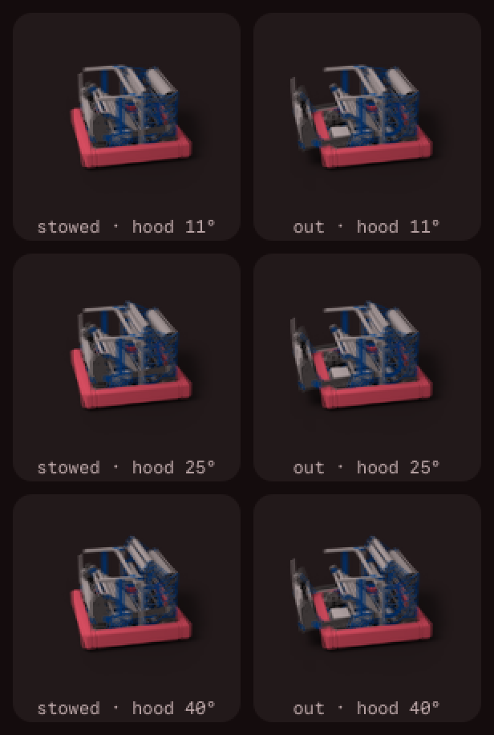
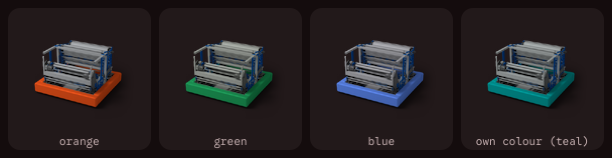
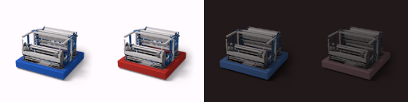
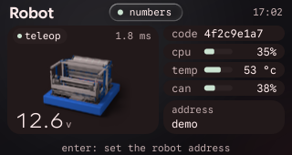
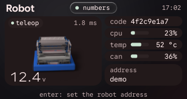
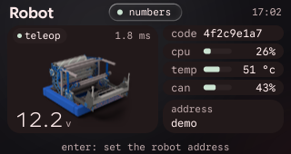
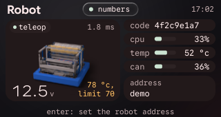
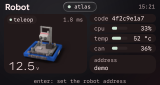

Numbers, in the Robot app
Only the robot is 3D; every other icon and page is flat, as on main. The robot is Numbers, FRC 5805's, from the team website's own model (smblyrequired/public/models/robot.glb). Its parts are coloured by what the robot reports, its intake and hood are posed as it reports them (Deploy/LengthInches, Hood/AngleDegrees), and its flywheel shines as it spins (Shooter/VelocityRPS). Every picture here was drawn by the shell's own code from the pack it would ship. Panel shots are at the panel's 320 × 170, dithered to 16 bits as it shows them, and three times larger.
Contact sheets
 Numbers in each state, dark, at rest
Numbers in each state, dark, at rest Numbers in each state, light, at rest
Numbers in each state, light, at rest
Every pose carried, from the side: the intake carriage (Deploy inches) by the hood angle
Before the alliance is known its bumpers take the accent, or the user's own colour; Numbers' blue stays its ownTurntables
Every second rendered view (8° apart), shown twice their size.
 idle · intake out · hood up, flywheel · hood motor hot
idle · intake out · hood up, flywheel · hood motor hot
light: idle · red alliance; dark: disabled · no linkThe Robot page
Motion
At the handheld's beat of 25 ms a frame, shown twice the panel's size.

motion-robot-turning
motion-intake-deploys
motion-hood-rises-flywheel-spins
motion-hood-motor-hot
motion-robot-enabledFlat again
Home, Weather, Settings › Battery, Health, empty pages, About and setup, as on main (setup keeps its quicker flow: pages that start on Next, and Wi-Fi carrying on by itself).
What it costs
pack (in the program file; read in place, never copied whole): 2542 kB, Numbers alone
on this PC: decoding and colouring a robot frame (112 px, its parts by state): 228 µs at rest, 307 µs posed (intake out, hood up); a frame while it turns (two views blended): 45 µs
the handheld, estimated at 20x this PC (README's factor): 4.6 ms to decode a frame (6.1 ms posed), 0.9 ms a frame while it turns
cache of coloured frames: at most 384 kB (CACHE_BYTES)
the Robot page, idle, turning for 20 s: 367 kB of frames at most, 47 frames decoded
the Robot page, hood up, flywheel, turning for 20 s: 367 kB of frames at most, 47 frames decoded
any other page (Weather, flat): 0 kB